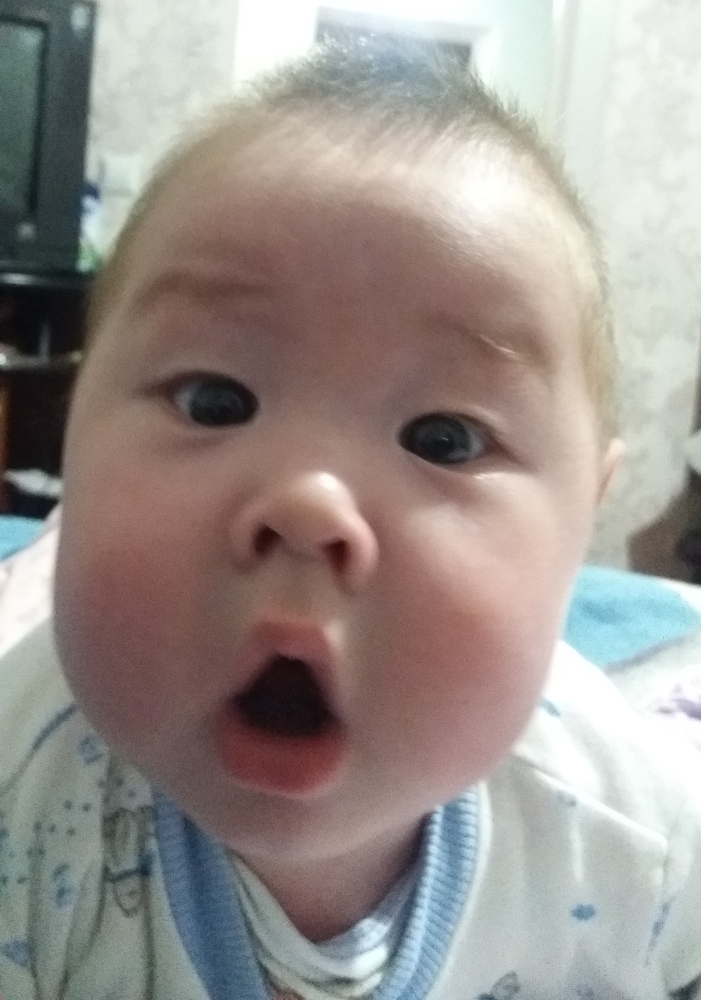

Вариант 1 - Flexbox. Контейнер центрирует содержимое по обеим осям.
Изображение прижато вправо через float: right,
поэтому текст автоматически обтекает его слева и снизу.

Вариант 1 - Flexbox. Контейнер центрирует содержимое по обеим осям.
Изображение прижато вправо через float: right,
поэтому текст автоматически обтекает его слева и снизу.
Вариант 2 - абсолютное позиционирование. Картинка вырвана из потока
и жёстко закреплена в правом верхнем углу контейнера
(top/right). Текст центрируется Flexbox-ом,
а чтобы он не наезжал на изображение, добавлен
padding-right.